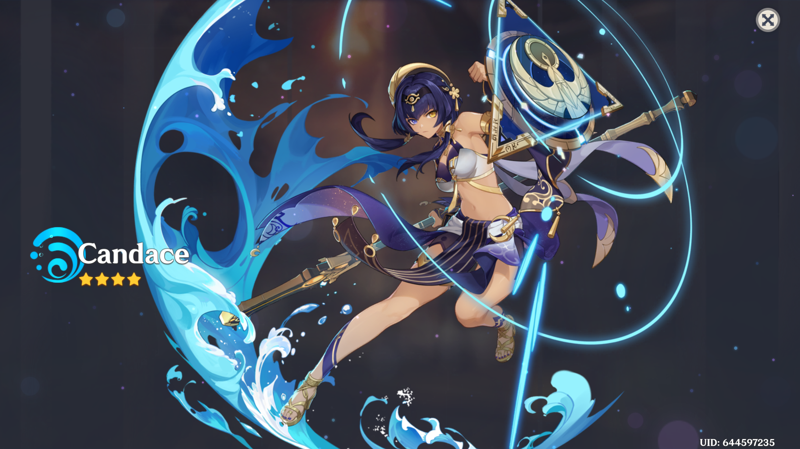

thursday
my son is 5 and asking to stay home from school because a boy won't stop messing with him.
five.
i just sat here and wrote out my own experience with bullying, digging all that shit back up, and now i find out it's starting for him too. in head start of all places.
and what makes it worse is this isn't new.
it's the same boy. same pattern. going all the way back to last year. daycare already knows. teachers have been reporting it. i've had the conversations. nothing about this is surprising, except maybe how long it's been allowed to go on.
they have a no kick-out policy, so it just… continues.
people love to say “kids will be kids” but what does that even mean when your child is already learning what it feels like to be picked on? to dread going somewhere he's supposed to feel safe?
it feels sick. like genuinely sick.
and if i'm being honest, this is hitting something deeper in me too.
i can feel it in my body. my nervous system is already wired wrong from everything else i've been through, and this? that's my baby.
i don't feel calm. i don't feel rational. i feel angry. i feel scared for him. i feel like i want to protect him from everything and i can't.
i want to scream.
but the one thing that keeps me from completely losing it is him.
because even with all of this, he still knows who he is.
during our the car ride today, i heard him talking to his cousins, all proud: “my daddy says i'm smart all the time too!”
and it hit me… those are the seeds. the ones we've been planting.
because no matter what some other kid says or does, he still sees himself as smart. still sees himself as good. still carries that with him.
because we tell him ever day. he's good. he's handsome. he's strong. he's kind. he's smart. he's funny.
and if i'm being real, i didn't have that growing up.
no one was in my ear like that. no one planting those kinds of seeds.
so i grew up thinking the opposite.
that i wasn't worth much. that i wasn't anything, really.
and when you believe that about yourself, you move like it.
you let things happen to you that shouldn't. you make choices that hurt you. you treat yourself like you don't matter, because somewhere along the way you learned that you didn't.
it took me years to even see that for what it was.
so when i hear my son say that, so confidently, like it's just true… it definitely heals something in me.
still, i'm not sure how to make the other kid stop. head start has a no kick-out policy, so it just… continues. here's to hoping the kid enrolls in a different school next year.

pulled for candance and actually got her lmao, hell yeah.